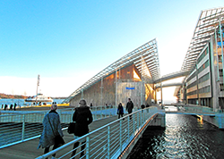

Besøk Astrup Fearnley!
Museet holder til sentralt på tjuvholmen og har til enhver tid de aller mest aktuelle kunstutstillingene! Ta turen innom!
Sjekk ut operaen!
Operaen i Bjørvika i Oslo ble åpnet i 2008 og er et av Oslos tydeligste trekk Svipp innom og få med deg et spektakulært show
Oslos beste restauranter
Vredens Gnag har testet over 100 restauranter i Oslo; se den offisielle vinneren her!
Se slottet!
Høstens beste hoteller
Under har vi samlet alle hoteller du bør vurdere å bo på hvis du skal overnatte i den norske hovedstaden. Først har vi plukket ut designhotellene i byen, som du kanskje bør vurdere å være tidlig ute med å bestille.